All seven warrior helms rebuilt to your snug-fit mock-up, in two rounds: the closed helms (great helm, barbute, crown, bascinet, horned) now fit about the size of the bare head instead of a bucket half again as big, now upright like yours rather than round, with bold grilles and a big face plate, a bold T on the barbute, breathing holes on the bascinet, a dark blued-steel horned helm and a bolder crown. The cap and spangenhelm sit a little snugger too. Nothing else on the hero changed, and no frame clips.
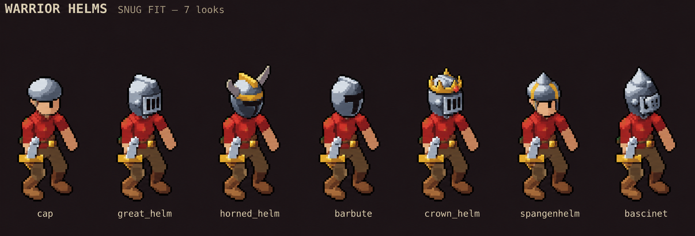
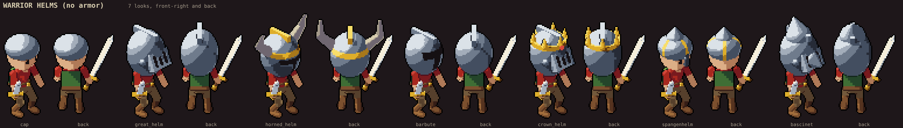
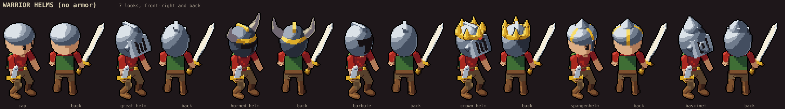
Before:
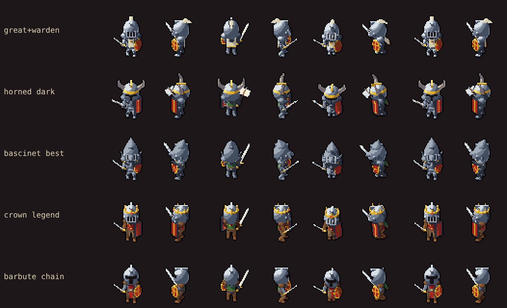
After:
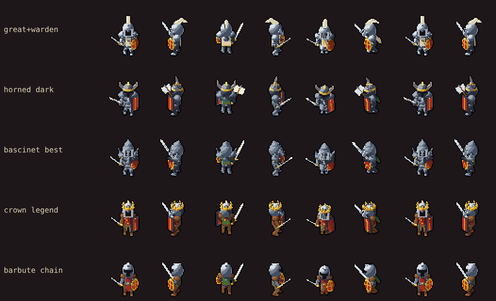
These two wear the same helms (a cap and a horned helm), so they change with it.
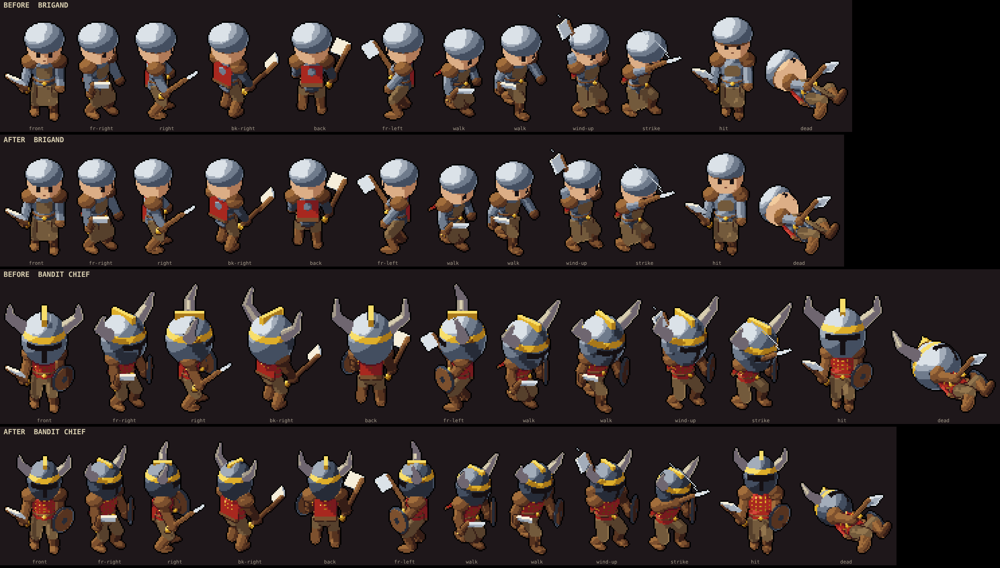
Pass 1 shrank every shell and its details, but the closed helms were still about 1.2x the bare head, with a fin-like ridge at the back. Pass 2 brought them to head size and cut the ridges, spike and horns down. Pass 3 gave the horns back a little length so they still read as horns at phone size.
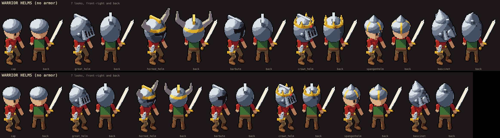
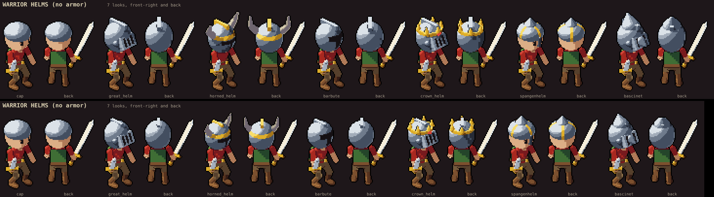
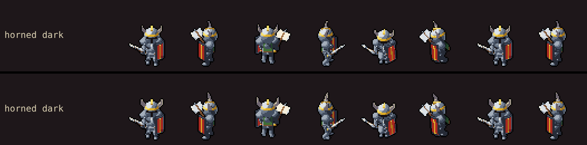
Round 2 (you asked for more). Pass 4: the closed shells made upright and a little narrower, like your mock-up, instead of round balls; a bigger, bolder grille; a bold T on the barbute; breathing holes on the bascinet snout; the horned helm in dark blued steel. Pass 5: a brighter face plate came out cream like the sword (lost, reverted) and a bolder crown (kept). Pass 6: the bigger face plate in steel (kept).
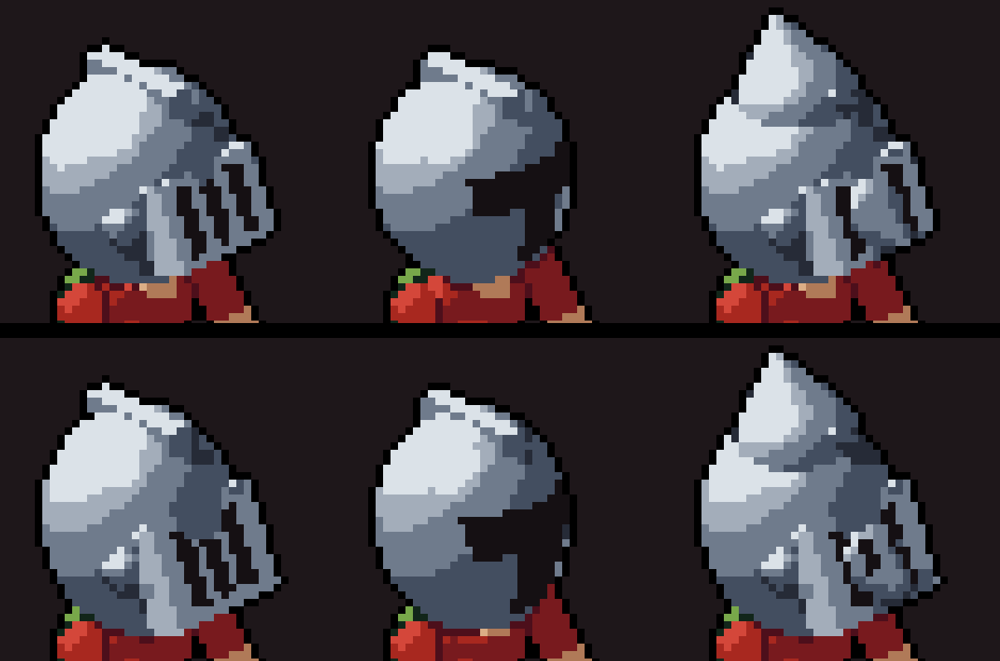
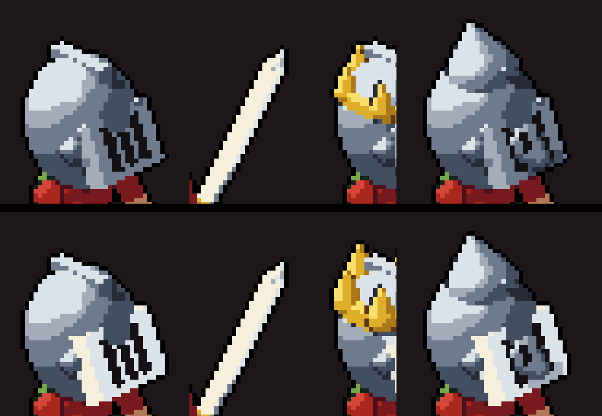
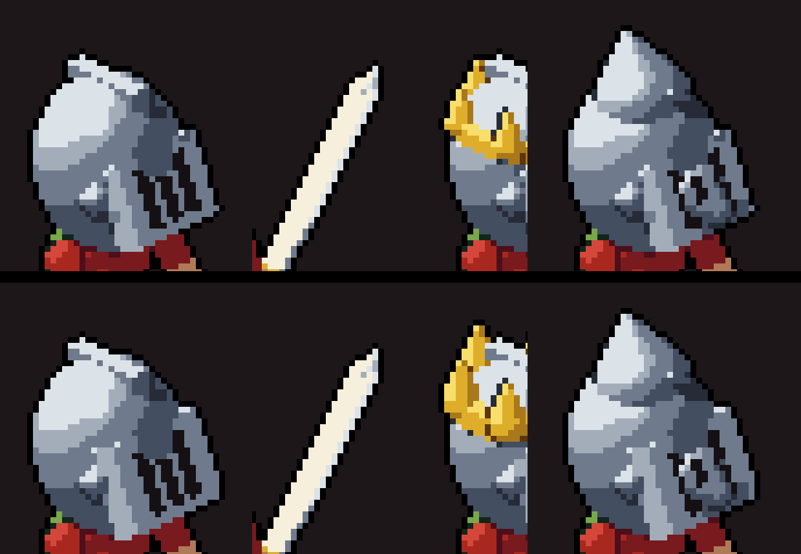